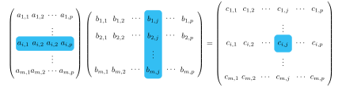

La composition de transformations linéaires est un procédé important et le produit matriciel qu’elle implique l’est encore plus. Dans cette section, on étudie la composition et le produit matriciel, les propriétés de ces opérations et quelques applications.
Sous-section2.2.1Le produit matriciel
Soit \(A,B\text{,}\) deux matrices dont le format n’est pas spécifié pour le moment. Si \(T_A,T_B\) sont les transformations linéaires associées aux matrices, on s’intéresse à la transformation \((T_A\circ T_B)(\vec{u})=T_A(T_B(\vec{u}))\text{,}\) et aux conditions qui font que cette transformation est bien définie.
Selon le théorème 2.1.19, la composition est elle-même une transformation linéaire, pourvu que l’image de \(T_B\) soit dans le domaine de \(T_A\text{.}\) Selon la sous-section 2.1.2, cette transformation devrait elle aussi avoir une matrice la représentant.
On suppose que la matrice \(B\) contient \(p\) lignes et \(n\) colonnes. Puisque \((T_A\circ T_B)(\vec{u})=T_A(T_B(\vec{u}))=T_A(B\vec{u})=A(B\vec{u})\text{,}\) on doit, dans un premier temps, avoir que \(\vec{u}\in \R^n\text{,}\) et le résultat de \(B\vec{u}\) sera un vecteur de \(\vec{v}\in\R^p\text{.}\) Pour que la multiplication \(A\vec{v}\) soit compatible, il faut que la matrice \(A\) possède \(p\) colonnes. Le nombre de lignes de \(A\) ne semble pas jouer un rôle autre que de donner la dimension du vecteur \(A\vec{v}\text{,}\) on suppose ainsi que \(A\in\mathcal{M}_{m\times p}\text{.}\)
La composition de deux transformations linéaires \((T_A\circ T_B)\vec{u}=T_A(T_B(\vec{u}))\) n’est donc définie que si le nombre de lignes de \(B\) correspond au nombre de colonnes de \(A\text{.}\) Si \(A\) possède \(m\) lignes et \(B\) possède \(n \) colonnes, la transformation \((T_A\circ T_B)(\vec{u})\) est une transformation linéaire de \(\R^n\) vers \(\R^m\) et il devrait donc exister une matrice dans \(\mathcal{M}_{m\times n}\) la représentant.
Comment déterminer la matrice de la composition? Il suffit de regarder où vont les vecteurs \(\vec{e}_1=(1,0,\ldots,0),\ldots, \vec{e}_n=(0,\ldots,0,1)\text{!}\) On pose \(\vec{b}_1,\vec{b}_2,\ldots ,\vec{b}_n\) les colonnes de \(B\text{.}\) Alors on a
Soit \(A\in \mathcal{M}_{m\times p}\) et \(B\in\mathcal{M}_{p\times n}\text{,}\) deux matrices. La matrice de la composition \((T_A\circ T_B)\vec{u}=T_A(T_B(\vec{u}))\text{,}\) notée \(AB\text{,}\) est la matrice dont la colonne \(j\) correspond au vecteur \(A\vec{b}_j\text{,}\) pour \(j=1,2,\ldots, n\text{.}\) On peut donc écrire
On poursuit l’exemple 2.1.20 et l’exercice 2.1.4.12 pour calculer les matrices des transformations \(P\circ R_{\frac{\pi}{2}} \)et \(R_{\frac{\pi}{2}}\circ P\text{.}\)
Cet exemple montre en particulier que la multiplication de matrices, contrairement à la multiplication de nombres réels, n’est pas commutative. On pouvait s’y attendre, étant donnée la définition de la multiplication, il y a souvent même des cas où \(AB\) est bien défini, mais pas \(BA\text{.}\) On étudie les propriétés de la multiplication et de la composition dans la sous-section 2.2.2.
On regarde maintenant un exemple dynamique, de nature géométrique.
Exemple2.2.3.Le produit matriciel: dynamique.
On considère deux transformations linéaires \(T_1(x,y),T_2(x,y)\) et la composition \(T_1(T_2(x,y))\text{.}\) Dans la figure ci-dessous, on illustre un vecteur \(\vec{u}\text{,}\) sa transformation par \(T_2\) et par la composition \(T_1\circ T_2\text{.}\) Sans faire de calculs algébriques, quelle est la matrice \(T_1\text{,}\) sachant que toutes les entrées des matrices sont des entiers?
Instructions.
Déplacer le point \(B\) afin de voir l’effet de \(T_2\) et de \(T_1(T_2(x,y))\) sur le vecteur \(\vec{u}\text{.}\) Dans les champs de texte \(a,b,c,d\text{,}\) entrer les valeurs pour
et appuyer sur "Vérifier la réponse" pour valider. Si désiré, un nouveau problème peut être généré en cliquant sur "Nouveau problème".
Figure2.2.4.La transformation extérieure d’une composition, du point de vue géométrique
Le produit de deux matrices a été défini comme la composition de deux transformations linéaires, mais une autre approche offre une perspective intéressante. Soit \(\vec{u}_1,\vec{u}_2,\ldots ,\vec{u}_n\) des vecteurs de \(\R^p\) et soit \(A\) une transformation linéaire de \(\R^p\) vers \(\R^m\) (combien de lignes et combien de colonnes \(A\) possède-t-elle?). Pour calculer l’image des vecteurs par \(A\text{,}\) on peut construire une matrice \(U\) dont les colonnes sont les vecteurs \(\vec{u}_1,\vec{u}_2,\ldots, \vec{u}_n\text{.}\) Puisque le produit
chaque colonne du produit représente l’image d’un vecteur par la matrice \(A\text{.}\) On obtient donc une manière rapide de calculer l’effet d’une transformation linéaire sur plusieurs points.
Si la matrice \(C\) est le produit des matrices \(A\) et \(B\text{,}\) que vaut \(c_{i,j}\text{,}\) l’entrée de la ligne \(i\) et de la colonne \(j\) de la matrice \(C\text{?}\) La proposition suivante donne la réponse, offrant par le fait même une autre manière de calculer le produit de deux matrices.
Proposition2.2.5.Le produit matriciel, entrée par entrée.
Soit \(A\in\mathcal{M}_{m\times p}, B\in\mathcal{M}_{p\times n}\) et \(C=AB\) le produit des deux matrices. Alors l’entrée de la ligne \(i\) et de la colonne \(j\) de la matrice \(C\) est donnée par
où \(\vec{a}_i\) est la ligne\(i\) de la matrice \(A\) et \(\vec{b}_j\) est la colonne\(j\) de la matrice \(B\text{.}\) En plus visuel, on a

Figure2.2.6.Le produit matriciel, entrée par entrée
Démonstration.
Soit \(c_{i,j}\text{,}\) une entrée de la matrice \(AB\text{.}\) Alors on a
\begin{align*}
c_{i,j}&= \left(A\vec{b}_j\right)_i & &\text{ selon la définition } \knowl{./knowl/xref/def-matmatprod.html}{\text{2.2.1}}\\
&=\vec{a}_i\cdot \vec{b}_j & &\text{ selon l'équation } \knowl{./knowl/xref/eq-matvecprodgen.html}{\text{(2.1.7)}}
\end{align*}
Dans l’exemple 2.1.13, on a défini la transformation identité dont la matrice \(I\) (pour le cas \(\R^2\to \R^2\)) est donnée par l’équation (2.1.8). Le nom identité est choisi puisque toute matrice \(A\) multipliée par \(I\) donne \(A\text{,}\) que la multiplication soit faite à gauche ou à droite. Par exemple, pour la multiplication à droite, on a
Évidemment, si l’on réfléchit géométriquement, ceci devient évident. On applique d’abord \(A\) pour ensuite faire l’identité, qui ne change rien. On définit maintenant la matrice identité pour les transformations \(\R^n\to \R^n\text{.}\)
Définition2.2.7.La matrice identité.
Soit la matrice dont les entrées valent \(1\) si le numéro de la ligne correspond à celui de la colonne et \(0\) dans les autres cas. Ceci correspond à une transformation qui envoie les vecteurs \((1,0,\ldots , 0),(0,1,0,\ldots , 0),\ldots (0,\ldots ,0,1)\) sur eux-mêmes et donc, cela correspond à la transformation qui ne fait rien. On appelle cette matrice l’identité et on la note \(I_n\text{,}\) ou tout simplement \(I\) lorsque la dimension est évidente par le contexte ou sans importance.
Lorsqu’on multiplie une matrice \(A\) par elle-même, on obtient alors le carré de cette matrice, noté \(A^2\text{.}\) En matière de transformations linéaires, cela revient à composer la fonction avec elle-même ou à l’appliquer deux fois. En généralisant, on obtient les puissances d’une matrice.
Définition2.2.8.Les puissances d’une matrice.
Soit \(A\text{,}\) une matrice carrée. On définit la \(k\) ième puissance de \(A\) comme étant le produit de \(A\) avec elle-même, \(k\) fois:
\begin{equation*}
A^k=\underbrace{AA\cdots A}_{k \text{ fois }}\text{.}
\end{equation*}
Les puissances de matrices sont utiles dans divers contextes, comme le montre l’exemple suivant. Le chapitre [provisional cross-reference: Applications] contient d’autres exemples concrets d’applications.
Exemple2.2.9.Une application du produit matriciel.
On considère trois villes reliées par des routes à sens unique. Les différents chemins possibles sont illustrés dans la figure ci-dessous. On peut créer une matrice qui contient l’information de ce graphe où l’entrée \(i,j\) de la matrice représente le nombre de chemins possibles pour se rendre de la ville \(i \) à la ville \(j\text{.}\)
Les puissances \(k\) de la matrice \(A\) représente le nombre de chemins de "longueur" \(k\) pour se rendre de la ville \(i\) à la ville \(j\) en empruntant \(k\) chemins. Par exemple, on peut calculer avec Sage les puissances de la matrice \(A\text{.}\)
On termine avec des commandes Sage en lien avec la sous-section.
Calcul2.2.11.Le produit matriciel sur Sage.
Si l’on a deux matrices \(A,B\) sur Sage, on peut facilement les multiplier en utilisant l’opération *. Il faut bien entendu que les dimensions soient compatibles. La deuxième cellule produit volontairement une erreur.
On applique maintenant une transformation à un ensemble de points, en construisant à partir des exemples 1.1.43 et 2.1.21. Pour cela, un peu de conversion est nécessaire, il faudra convertir une liste en matrice, puis une matrice en liste. La première conversion se fait bien avec la commande column_matrix. Celle-ci prend la liste L et la transforme en matrice colonne. Après la multiplication de cette nouvelle matrice par la transformation linéaire, il faut convertir la matrice AL en liste de points. Pour cela, on utilise la commande list sur les colonnes de AL. Le nombre de colonnes d’une matrice M est donné par la commande M.ncols().
La matrice identité 2.2.7 est connue de sage, on peut l’obtenir à l’aide de la commande identity_matrix(n) où \(n\) est la taille de la matrice carrée.
Sous-section2.2.2Les propriétés du produit matriciel
Contrairement à l’addition de matrices, le produit ne possède pas exactement les mêmes propriétés que la multiplication de nombres réels. On a déjà observé, à l’exemple 2.2.2, que la multiplication n’est pas commutative. Les propriétés suivantes sont toujours satisfaites pour le produit matriciel.
Proposition2.2.12.Les propriétés du produit matriciel.
Soit \(A\in\mathcal{M}_{m\times n}\text{,}\)\(B\) et \(C\text{,}\) des matrices de format approprié et \(r\in \R\text{.}\) On a
Liste2.2.13.Propriétés du produit matriciel
\(\displaystyle AI_n=I_mA=A\)
\((A+B)C=AC+BC\) et \(A(B+C)=AB+AC\)
\(\displaystyle (rA)B=r(AB)=A(rB)\)
\((AB)C=A(BC)\text{.}\)
La dernière propriété signifie que la multiplication est associative. Comme elle n’est pas commutative, il est primordial de porter attention à l’ordre des multiplications dans la propriété 2.2.13:2.
Démonstration.
On pose \(\vec{e}_k\text{,}\) les colonnes de la matrice identité \(I_n\) et \(\vec{a}_k\) les colonnes de \(A\text{.}\) Comme la \(k\) ième colonne du produit \(AI_n\) est donnée par \(A\vec{e}_k\) et que ce produit matrice vecteur correspond à \(a_k\text{,}\) on a
\begin{equation*}
AI_n=A\text{.}
\end{equation*}
De plus, la \(k\) ième colonne de \(I_mA\) est donnée par \(I_m\vec{a}_k\) et ce produit matrice vecteur vaut \(a_k\text{.}\) On a donc
\begin{equation*}
I_mA=A\text{.}
\end{equation*}
Démonstration.
On pose \(\vec{c}_k\text{,}\) la \(k\) ième colonne de la matrice \(C\text{.}\) Selon l’addition matricielle, on a pour la \(k\) ième colonne de \((A+B)C\)
De même, si \(\vec{b}_k\) représente la \(k\) ième colonne de \(B\text{,}\) on peut déterminer la \(k\) ième colonne de \(A(B+C)\) en utilisant le fait que la \(k\) ième colonne de \(B+C\) est \(\vec{b}_k+\vec{c}_k\) pour avoir
La multiplication matricielle permet d’obtenir la matrice de certaines transformations linéaires en se ramenant à un cas connu.
Conseil2.2.14.Se ramener à un cas connu.
En mathématiques, il est fréquent de prendre un problème et de le transformer en plusieurs problèmes plus simples et déjà connus. Par exemple, on peut calculer l’aire d’un polygone en le décomposant en triangles, formes plus simples et d’aire connue.
Exemple2.2.15.La réflexion par rapport à une droite passant par l’origine.
On considère \(\mathcal{D}\) une droite de \(\R^2\) passant par l’origine, qui fait un angle de \(\theta\) avec l’axe des abscisses (mesuré dans le sens antihoraire). On cherche à faire une réflexion par rapport à cette droite. On peut déterminer la matrice de cette réflexion de la manière suivante:
On commence par faire une rotation de \(\theta\) dans le sens horaire afin de ramener la droite sur l’axe des abscisses.
On effectue ensuite la réflexion par rapport à l’axe des abscisses, que l’on sait faire (voir l’exemple 2.1.13).
Par la suite, on ramène le tout à la position initiale en effectuant une rotation de \(\theta\) dans le sens antihoraire.
Solution.
Selon l’énoncé du problème, cette réflexion est en fait une composition de deux rotations et de la réflexion \(S_x\text{.}\) Si l’on pose \(S_{\theta}\) la réflexion cherchée, on a alors
L’une ou l’autre des formes matricielles peut être utilisée.
On regarde l’effet de la composition de deux rotations ou réflexions. La figure interactive 2.2.16 permet dans un premier temps de visualiser l’effet de ces compositions. On découvre que la combinaisons d’une réflexion et d’une rotation est toujours une autre réflexion ou rotation. L’exemple 2.2.17 utilise Sage pour calculer algébriquement le résultat des quatre combinaisons possibles.
Instructions.
Appuyer sur l’un des deux boutons pour faire apparaitre des options additionnelles. Après avoir cliqué sur la deuxième transformation, il est possible d’essayer de deviner si le résultat est une rotation ou une rélfexion et de trouver l’angle de la transformation composée.
Figure2.2.16.Compositions de réflexions et rotations
Calcul2.2.17.La composition de certaines transformations.
On considère une rotation d’angle \(\theta_1\) et une rotation d’angle \(\theta_2\text{.}\) Intuitivement, la composition de ces deux rotations devrait être une rotation d’angle \(\theta_1+\theta_2\text{.}\) De plus, l’ordre ne devrait pas être important. On peut le vérifier algébriquement à l’aide de Sage.
La dernière ligne du code permet d’obtenir la simplification voulue. La méthode apply_map permet d’appliquer trig_reduce() à chaque entrée de la matrice par le biais d’une fonction intermédiaire lambda. Ceci n’est pas très intuitif, mais, pour l’instant, ça suffira. L’exercice [provisional cross-reference: simplifiermatrice] permettra de créer une fonction plus simple qui pourra simplifier une matrice.
On voit toutefois qu’après simplification, la transformation est bel et bien une rotation d’angle \(\theta_1+\theta_2\text{.}\)
On s’intéresse maintenant à la composition de deux réflexions d’angle respectif \(\phi_1,\phi_2\text{.}\) Est-ce que le résultat de ce type de composition sera aussi une réflexion? Si oui, pourquoi, si non, donner un exemple avant d’exécuter le code ci-dessous.
Le résultat, peut-être surprenant, est une rotation. La simplification effectuée par Sage ne montre pas directement la forme d’une matrice de rotation, mais on peut montrer qu’elle est équivalente à une rotation d’angle \(2(\phi_1-\phi_2)\text{.}\) Ceci suggère également que les réflexions ne sont pas commutatives, à savoir qu’en général, \(S_{\phi_1}S_{\phi_2}\neq S_{\phi_2}S_{\phi_1}\text{.}\)
Maintenant, on s’intéresse à la composition d’une rotation et d’une réflexion. Comme on sait que la multiplication n’est pas commutative, on regarde s’il y a une différence entre faire la réflexion en premier suivie de la rotation et la rotation suivie de la réflexion (peut-on faire une prédiction?).
D’abord, \(R_{\theta}S_{\phi}\text{:}\)
Le résultat semble donc être une réflexion d’angle \(\frac{\theta+2\phi}{2}\text{.}\)
On compare maintenant avec \(S_{\phi}R_{\theta}\text{:}\)
Le résultat est encore une fois une réflexion, mais cette fois-ci d’angle \(\frac{-\theta+2\phi}{2}\text{.}\) Il est intéressant de vérifier chacun de ces résultats avec la figure interactive 2.2.16.
Finalement, on s’intéresse à la composition de trois transformations, en utilisant les calculs précédents et l’associativité pour déterminer le résultat final.
La composition de trois rotations devrait être, elle aussi, une rotation dont l’angle correspond à la somme des angles de chacune des rotations. En utilisant l’associativité, on montre facilement que
\begin{align*}
R_{\theta_1}(R_{\theta_2}R_{\theta_3})&=R_{\theta_1}R_{\theta_2+\theta_3} && \text{puisque la composition de deux rotations est une rotation dont l'angle est la somme des angles}\\
&=R_{\theta_1+\theta_2+\theta_3} && \text{puisque la composition de deux rotations est une rotation dont l'angle est la somme des angles}\\
&=R_{\theta_1+\theta_2}R_{\theta_3} && \text{selon l'associativité de l'addition de nombres réels et la composition de rotations}\\
&(R_{\theta_1}R_{\theta_2})R_{\theta_3} &&\text{puisque la composition de deux rotations est une rotation dont l'angle est la somme des angles}\text{.}
\end{align*}
L’associativité est ainsi vérifiée et cohérente avec la composition de rotations.
La composition de trois réflexions semble plus difficile à analyser. Deux réflexions composées ensemble donnent une rotation. Une rotation composée avec une réflexion donne une réflexion, mais on sait que l’ordre de la composition est important. Est-ce alors évident que l’associativité sera respectée? On a d’une part
\begin{align*}
S_{\phi_1}(S_{\phi_2}S_{\phi_3})&=S_{\phi_1}R_{2(\phi_2-\phi_3)} && \text{puisque la composition de deux réflexions est une rotation dont l'angle est le double de la différence entre la deuxième et la première réflexion}\\
&=S_{\frac{-(2(\phi_2-\phi_3))+2\phi_1}{2}} && \text{puisque la composition d'une rotation suivie d'une réflexion est une réflexion dont l'angle est la moitié de la différence entre le double de l'angle de la réflexion et l'angle de la rotation}\\
&=S_{\phi_1-\phi_2+\phi_3} && \text{après simplification}\text{.}
\end{align*}
D’autre part, on a
\begin{align*}
(S_{\phi_1}S_{\phi_2})S_{\phi_3}&=R_{2(\phi_1-\phi_2)}S_{\phi_3} && \text{puisque la composition de deux réflexions est une rotation dont l'angle est le double de la différence entre la deuxième et la première réflexion}\\
&=S_{\frac{2(\phi_1-\phi_2)+2\phi_3}{2}} && \text{puisque la composition d'une réflexion suivie d'une rotation est une réflexion dont l'angle est la moitié de la somme entre le double de l'angle de la réflexion et l'angle de la rotation}\\
&=S_{\phi_1-\phi_2+\phi_3} && \text{après simplification}\text{.}
\end{align*}
On a donc bel et bien égalité.
D’autres cas seront explorés à l’exercice 2.2.3.9.
Les points importants de cette section sont
La multiplication matricielle, selon la définition par les colonnes 2.2.1 ou selon un calcul [provisional cross-reference: prop-matmatprod];
La forme matricielle d’une réflexion, donnée par l’équation (2.2.4).
De plus, avec Sage, on peut multiplier des matrices en utilisant l’opération *. On peut aussi appliquer une transformation linéaire à un ensemble de points en transformant ces points en matrice pour ensuite effectuer la multiplication. Le nombre de colonnes d’une matrice \(A\) est obtenu à l’aide de la commande A.ncols() et le nombre de lignes serait obtenu avec A.nrows(). La commande trig_reduce permet de simplifier des équations trigonométriques. On peut obtenir la matrice identité à l’aide de la commande identity_matrix(n).
Exercices2.2.3Exercices
1.
Démontrer que, peu importe la matrice \(A\in\mathcal{M}_2\text{,}\) on a \(AI=A\text{.}\)
Indice.
Il faut simplement créer une matrice quelconque et faire le calcul.
Solution.
Soit \(A=\begin{pmatrix}a&b\\c&d\end{pmatrix}\in\mathcal{M}_2\text{.}\) Alors,
Démontrer cette équation si elle est valide. Sinon, donner un contrexemple.
Indice.
Considérer la commutativité du produit matriciel.
Réponse.
L’équation n’est pas valide. Un contrexemple possible est \(A=\begin{pmatrix}0&1\\1&0\end{pmatrix}\) et \(B=\begin{pmatrix}0&0\\-1&1\end{pmatrix}\text{.}\)
Solution.
Algébriquement, c’est faux puisque le produit matriciel n’est en général pas commutatif. On a donc que \(AB\neq BA\text{.}\) Ainsi,
Pour trouver une exemple concret, on peut penser à deux réflexions. En prenant une réflexion par rapport à la droite \(y=x\) et une autre par rapport à l’axe des \(y\text{,}\) on obtient les matrices \(A=\begin{pmatrix}0&1\\1&0\end{pmatrix}\) et \(B=\begin{pmatrix}0&0\\-1&1\end{pmatrix}\text{,}\) on calcule \((A+B)^2\) et \(A^2+2AB+B^2\) et l’on constate que ce n’est pas égal. En effet,
Est-ce que l’équation \((A-B)(A+B)=A^2-B^2\) est valide pour les matrices carrées? Si oui, il faut le démontrer et si non, trouver un contrexemple.
Réponse.
L’équation n’est pas valide. Un contrexemple possible est \(A=\begin{pmatrix}0&1\\1&0\end{pmatrix}\) et \(B=\begin{pmatrix}0&0\\-1&1\end{pmatrix}\text{.}\)
Solution.
Algébriquement, c’est faux puisque le produit matriciel n’est en général pas commutatif. On a donc que \(AB\neq BA\text{.}\) Ainsi,
Avec le contrexemple \(A=\begin{pmatrix}0&1\\1&0\end{pmatrix}\) et \(B=\begin{pmatrix}0&0\\-1&1\end{pmatrix}\text{,}\) on calcule \((A-B)(A+B)\) et \(A^2-B^2\) et l’on constate que ce n’est pas égal. En effet,
Avec les nombres réels, si \(xy=0\text{,}\) alors \(x=0\) ou \(y=0\) (possiblement les deux). Est-ce aussi vrai pour les matrices? C’est-à-dire, si \(AB=O\) pour deux matrices compatibles pour la multiplication, est-ce que \(A=O\) ou \(B=O\text{?}\) Si oui, il faut le démontrer et si non, trouver un contrexemple. On rappelle que \(O\) dénote la matrice nulle de taille appropriée.
Indice.
Penser à deux projections orthogonales successives dans \(\R^2\) telles que leur composition annihilera tout vecteur.
Réponse.
Les matrices \(A=\begin{pmatrix}1&0\\0&0\end{pmatrix}\) et \(B=\begin{pmatrix}0&0\\0&1\end{pmatrix}\) fonctionnent. Il existe d’autres réponses possibles.
Solution.
Comme le dit l’indice du problème, on peut réfléchir à une composition de transformations qui ramènerait tout vecteur au vecteur nul. La transformation dont la matrice est \(O\) peut donc être obtenue en composant, par exemple, une projection orthogonale sur l’axe des \(x\) (\(A\)) et une projection orthogonale sur l’axe des \(y\) (\(B\)) . Les matrices permettant cela ont déjà été introduites, mais on peut les retrouver en réfléchissant à l’image des vecteurs de la base canonique. On aura \(A=\begin{pmatrix}1&0\\0&0\end{pmatrix}\) et \(B=\begin{pmatrix}0&0\\0&1\end{pmatrix}\text{.}\) En les multipliant, on obtient:
Une matrice de permutation est une matrice \(P\) telle que chaque colonne et chaque ligne ne contient qu’une entrée non nulle égale à \(1\text{.}\) Par exemple, la matrice
Faire la liste de toutes les matrices de permutations \(2\times 2\text{.}\) Quel est l’effet d’une matrice de permutation \(2\times 2\) sur un vecteur?
Solution.
Voici la liste: \(\begin{pmatrix}1&0\\0&1\end{pmatrix}\) et \(\begin{pmatrix}0&1\\1&0\end{pmatrix}\text{.}\) La première matrice est l’identité, qui ne modifie donc pas les vecteurs, et la seconde est une matrice de réflexion selon l’axe \(y=x\text{.}\) Algébriquement, cette seconde matrice fait simplement permuter ses composantes en \(x\) et \(y\text{.}\)
(b)
Faire la liste de toutes les matrices de permutations \(3\times 3\text{.}\) Quel est l’effet d’une matrice de permutation \(3\times 3\) sur un vecteur?
Solution.
Voici la liste: \(\begin{pmatrix}1&0&0\\0&1&0\\0&0&1\end{pmatrix}\text{,}\)\(\begin{pmatrix}0&1&0\\1&0&0\\0&0&1\end{pmatrix}\text{,}\)\(\begin{pmatrix}0&0&1\\0&1&0\\1&0&0\end{pmatrix}\text{,}\)\(\begin{pmatrix}1&0&0\\0&0&1\\0&1&0\end{pmatrix}\text{,}\)\(\begin{pmatrix}0&1&0\\0&0&1\\1&0&0\end{pmatrix}\) et \(\begin{pmatrix}0&0&1\\1&0&0\\0&1&0\end{pmatrix}\text{.}\) La première matrice est l’identité, qui ne modifie pas les vecteurs. Les trois suivantes sont des matrices de réflexion selon différents plans, puisqu’un des trois vecteurs colonnes demeure inchangé. Par exemple, la deuxième est une réflexion selon le plan \(y=x\) et \((0,0,1)\) reste inchangé. Finalement, les deux dernières sont des matrices de rotation, soit dans le sens horaire soit antihoraire autour de l’axe parallèle au vecteur \((1,1,1)\text{.}\) Algébriquement, toutes les matrices de permutation font permuter les composantes d’un vecteur soit deux à deux (réflexions), ou toutes les trois (rotations).
(c)
Si \(P_a\) et \(P_b\) sont deux matrices de permutation, est-ce que leur produit est une matrice de permutation?
Réponse.
Oui.
Solution.
Oui, il s’agit encore d’une matrice de permutation. Logiquement, si l’on fait des permutations de composantes, et qu’on fait ensuite d’autres permutations, la composition de ces deux opérations se fera en une seule opération de permutation.
(d)
Si \(P_a\) et \(P_b\) sont deux matrices de permutation, est-ce que \(P_aP_b=P_bP_a\text{?}\)
Réponse.
Non.
Solution.
En général, les matrices sont rarement commutatives et les permutations ne font pas exceptions à cette règle. Ici, il est possible de trouver un contrexemple où \(P_aP_b \neq P_bP_a\text{.}\) On choisit \(P_a=\begin{pmatrix}0&1&0\\1&0&0\\0&0&1\end{pmatrix}\) et \(P_b=\begin{pmatrix}1&0&0\\0&0&1\\0&1&0\end{pmatrix}\text{.}\) Alors,
Soit \(A=\begin{pmatrix} a& c \\ b & d \end{pmatrix}\) une matrice à coefficients réels. En réfléchissant de façon géométrique, puis en vérifiant algébriquement que chaque matrice satisfait l’équation, trouver le plus grand nombre de matrices différentes \(A\) telles que
(a)
\(A^2=I\text{.}\)
Réponse.
\begin{equation*}
A=I\text{, } A=R_{180^\circ}\text{ ou } A=S_{\theta}\text{ pour tout angle } \theta\in[0,2\pi[
\end{equation*}
Autrement écrit,
\begin{equation*}
A=\begin{pmatrix}1&0\\0&1\end{pmatrix}\text{, } A=\begin{pmatrix}-1 & 0\\0 & -1\end{pmatrix}
\text{ ou } A=\begin{pmatrix}
\cos(2\theta)& \sin(2\theta)\\
\sin(2\theta) & -\cos(2\theta)
\end{pmatrix}\text{ pour tout angle } \theta\in[0,2\pi[
\end{equation*}
Solution.
Géométriquement, on cherche à trouver une transformation linéaire qui, si l’on effectue cette transformation deux fois, a comme résultat de ne rien changer au vecteur initial. Bref, le déplacement initial doit être en quelque sorte annulé en refaisant la même transformation. On pense assez rapidement aux réflexions. En effet, une réflexion par rapport à n’importe quel axe répété deux fois ramènera tout vecteur à son emplacement initial. Par l’équation (2.2.4), on sait que toutes les matrices de réflexion sont de la même forme. On démontre que \(S_{\theta}^2=I\text{.}\)
Une autre transformation est une rotation de \(180^\circ\text{.}\) En effet, lorsque l’on répète cette rotation, on revient au point de départ. Par l’équation (2.1.13), on obtient rapidement la matrice de rotation et l’on vérifie que \(R_{180^\circ}^2=I\text{.}\)
Finalement, il ne faut pas oublier que la matrice identité est une transformation linéaire. Répéter cette transformation qui ne change rien ne transformera pas les vecteurs et donc \(I^2=I\text{.}\) La vérification algébrique est simple.
Puisque la transformation composée doit globalement amener le vecteur \((1,0)\) à \((-1,0)\) et \((0,1)\) à \((0,-1)\text{,}\) on a une solution assez simple avec la rotation. Si l’on fait une rotation de \(90^\circ\) et qu’on la répète, on arrivera à cette position. On le vérifie algébriquement. Par l’équation (2.1.13),
En réalité, une infinité de matrices de rotation peuvent faire l’affaire. En effet, il suffit d’avoir une rotation qui permet, lorsque répétée deux fois, d’aboutir à un angle qui soit un multiple de \(2\pi\text{,}\) partant de \(\pi\text{.}\) Autrement dit, si \(2\theta=\pi+2\pi k, k\in\mathbb{Z}\text{,}\) la matrice fonctionne. On le montre.
On réalise cependant que toutes les matrices où \(k\) est de même parité sont identiques. En effet, une rotation de \(90^\circ\) est identique à une rotation de \(450^\circ\text{.}\) Bref, les deux matrices de rotation possibles sont de \(90^\circ\) et de \(270^\circ\) avec les matrices respectives:
Pour obtenir la matrice nulle en transformant deux fois de suite, il existe quelques options. La plus facile est de définir \(A=O\text{,}\) la transformation qui ramène tous les vecteurs à l’origine. Il est évident que \(O^2=O\text{,}\) on n’a pas à le démontrer algébriquement.
satisfont l’équation \(A^2=O\) en raison des nombreux zéros. Elles représentent des transformations que l’on ne connait pas encore. On peut avoir une intuition géométrique en voyant où les vecteurs de base se retrouvent. La première matrice envoie \((1,0)\) sur \((0,b)\) et \((0,1)\) sur \((0,0)\text{.}\)
Intuitivement, il faut trouver une matrice de transformation qui donne le même résultat qu’elle soit composée avec elle-même ou prise seule. Toutes les transformations du type projections orthogonales ou pas sont telles qu’on ne change rien en répétant la transformation. On peut penser rapidement aux transformations orthogonales sur \((1,0)\) et sur \((0,1)\) données respectivement par les matrices
Cela dit, de nombreuses autres matrices de projection fonctionneront. En effet, dès que soit une ligne, soit une colonne est nulle, on aura une projection oblique qui fonctionne. Par exemple, si \(A=\begin{pmatrix}
1 & k\\
0 & 0
\end{pmatrix}, k\in\R\text{,}\) alors
Il en sera de même pour les matrices \(\begin{pmatrix}
1 & 0\\
k & 0
\end{pmatrix}, k\in\R\text{,}\)\(\begin{pmatrix}
0 & k\\
0 & 1
\end{pmatrix}, k\in\R\) et \(\begin{pmatrix}
0 & 0\\
k & 1
\end{pmatrix}, k\in\R\)
Finalement, la matrice identité et la matrice nulle fonctionnent également. Il est facile de le vérifier.
7.
En utilisant une méthode analogue à celle de l’exemple 2.2.15, déterminer la matrice de transformation linéaire permettant de faire un étirement de facteur \(k\) dans la direction d’un vecteur \(\vec{u}=(\cos(\theta), \sin(\theta))\text{.}\) Utiliser les matrices \(R_\theta\) et \(R_{-\theta}\) de l’exercice ainsi que la matrice d’étirement horizontal de facteur \(k\text{.}\)
Indice.
La démarche consiste en réalité à effectuer d’abord une rotation d’angle \(-\theta\text{,}\) ensuite à étirer horizontalement, puis à effectuer la rotation d’angle \(\theta\text{.}\) On le fait en multipliant les trois matrices ensemble. On peut trouver les matrices nécessaires dans l’exemple 2.1.23.
Selon l’énoncé du problème, cet étirement est en fait une composition de deux rotations et de l’étirement horizontal de facteur \(k\)\(Eh_k\text{.}\) Si l’on pose \(E\theta_k\) l’étirement cherché, on a alors
À partir de la matrice développée à l’exercice 2.2.3.7 considérer un étirement \(T\) dans la direction d’angle \(\theta=30^\circ\) et de facteur \(k=2\text{.}\) Vérifier que pour le vecteur \(\vec{u}=\begin{pmatrix}\cos(\theta)\\ \sin(\theta)\end{pmatrix}=\begin{pmatrix}\sqrt{3}/2\\1/2\end{pmatrix}\text{,}\) on a \(T(\vec{u})=2\vec{u}\) et que \(T(\vec{u}_\perp)=\vec{u}_\perp\text{.}\)
On appelle ces deux directions les directions invariantes d’une transformation linéaire. On les appelle également des vecteurs propres et le facteur d’étirement une valeur propre. On étudiera ces notions à la section [provisional cross-reference: section sur les valeurs propres].
Solution.
On calcule la matrice d’étirement de facteur \(2\)dans la direction \(\theta=30^\circ\) simplement en remplaçant cet angle et cette valeur dans la matrice trouvée précédemment. On obtient:
Soit \(R_{\theta_1},R_{\theta_2},S_{\phi_1}\) et \(S_{\phi_2}\text{,}\) des matrices de rotation d’angle \(\theta_1\) et \(\theta_2\) et de réflexion d’angle \(\phi_1\) et \(\phi_2\text{.}\) En utilisant les résultats de l’exemple 2.2.17, décrire les compositions suivantes en utilisant à la fois \((AB)C\) et \(A(BC)\) afin de vérifier l’associativité.
(a)
\(R_{\theta_1}R_{\theta_2}S_{\phi_1}\)
Indice.
On procède de façon semblable à l’exemple, en utilisant les résultats pour la composition des rotations et des réflexions. Entre autres, on a \(R_{\theta_1}S_{\theta_2}=S_{\frac{\theta_1+2\theta_2}{2}}\) et \(S_{\theta_2}R_{\theta_1}=S_{\frac{-\theta_1+2\theta_2}{2}}\text{.}\)
On remarque également que les démonstrations d’associativité se construisent souvent du début et de la fin, vers le milieu. Autrement dit, on peut développer \(A(BC)\) et \((AB)C\) et simplifier pour constater qu’on arrive à la même transformation (au milieu des démarches). On a choisi de les écrire du début à la fin puisque c’est plus soignée, mais on a bel et bien construit la démonstration du début jusqu’au milieu et de la fin jusqu’au milieu.
Il s’agit donc globalement d’une rotation d’angle \(2\phi_1+\theta_1-2\phi_2\text{.}\)
Exercices Sage.
Les exercices qui suivent sont conçus pour être résolus avec Sage. Des cellules vides sont disponibles pour écrire les réponses. Évidemment, il y a plusieurs manières d’arriver aux réponses.
10.
Lors d’une certaine journée au Canada, voici les offres pour des vols directs entre les principaux aéroports canadiens:
Table2.2.18.Vols intérieurs au Canada
\(\uparrow\) De / Vers \(\rightarrow\)
YUL
YYZ
YVR
YYC
YEG
YUL
0
20
5
3
2
YYZ
15
0
10
7
6
YVR
3
8
0
12
8
YYC
3
6
12
0
8
YEG
2
6
8
6
0
Quelle serait une matrice \(T\) qui permettrait de décrire le nombre de vols directs entre les différentes villes canadiennes?
Donner une interprétation du produit \(T^2\text{?}\)
Utiliser Sage pour déterminer combien de vols différents entre Montréal (YUL) et Vancouver (YVR) impliquent une escale.
Le produit \(T^2\) représente le nombre de manières d’aller d’une ville \(A\) vers une ville \(B\) en utilisant deux vols. Il y a \(252\) vols de YUL vers YVR qui comportent une escale.
12.Construction des matrices de permutation d’ordre \(n\).
Dans cet exercice, on veut donner une manière de faire la liste des matrices de permutation \(n\times n\text{,}\) définies à l’exercice 2.2.3.5.Pour cela, on va utiliser la commande Permutations(n).list(), qui renvoie la liste des permutations à \(n\) éléments. Par exemple
renvoie une liste de \(6\) éléments correspondant à toutes les manières d’ordonner les nombres \(1,2,3\text{.}\) Une matrice de permutation est une matrice obtenue en permutant les colonnes de la matrice identité. Dans cet exercice, on crée une fonction perm_matrix(n) qui donnera une liste des matrices de permutation d’ordre \(n\text{.}\) Pour cela, il faudra
Créer la liste des permutations d’ordre \(n\) à l’aide de la commande Permutations(n).list().
Créer la liste des vecteurs \(\vec{e}_1,\vec{e}_2 , \ldots ,\vec{e}_n\) à partir de la matrice identité. (Utiliser la commande A.columns().
Créer chaque matrice de permutation à partir de la liste des permutations. La liste des permutations permet de savoir à quelle colonne de la matrice identité correspond chacune des colonnes de la matrice \(P\text{.}\)
Indice1.
Commencer par créer une fonction qui fournira les matrices de permutation \(2\times 2\) et une autre fonction qui va donner les matrices de permutation \(3\times 3\text{.}\) Des réponses possibles se trouvent dans l’indice suivant.
Indice2.
def perm_matrix2x2():
Id=identity_matrix(2)
col=Id.columns()
p=Permutations(2).list() #La liste des permutations
L=list() #une liste vide
for perm in p: #Pour chaque permutation dans la liste p, on va ajouter la matrice de permutation correspondante à la liste L
P=column_matrix([col[perm[0]-1],col[perm[1]-1]]) #On construit une matrice de permutation selon une permutation spécifique
L.append(P) #On l'ajoute à la liste existante
return L
def perm_matrix3x3():
Id=identity_matrix(3)
col=Id.columns()
p=Permutations(3).list() #La liste des permutations
L=list() #une liste vide
for perm in p: #Pour chaque permutation dans la liste p, on va ajouter la matrice de permutation correspondante à la liste L
P=column_matrix([col[perm[0]-1],col[perm[1]-1],col[perm[2]-1]]) #On construit une matrice de permutation selon une permutation spécifique
L.append(P) #On l'ajoute à la liste existante
return L
Bloc de code2.2.21.Un indice pour l’exercice
Pour le cas \(n\times n\text{,}\) il faudra faire quelques modifications. D’abord, on change les \(2,3\) dans les premières lignes par des \(n\text{,}\) afin d’avoir une idée du comportement plus général de l’exercice. Ensuite parce, qu’on ne connait pas d’avance la dimension des matrices cherchées, il faut trouver un moyen de changer la ligne P=column_matrix(...).
Solution.
def perm_matrix(n):
Id=identity_matrix(n)
col=Id.columns()
p=Permutations(n).list()
L=list()
for perm in p:
colperm=list()
for j in range(len(perm)):
colperm.append(col[perm[j]-1])
P=column_matrix(colperm)
L.append(P)
return L
Bloc de code2.2.22.La solution pour l’exercice
13.
Utiliser le produit de matrices de rotation et Sage pour démontrer les identités trigonométriques
Si l’on compose les rotations \(R_{\alpha}\) et \(R_{\beta}\text{,}\) on sait que l’image du vecteur \((1,0)\) correspondra à \((\cos(\alpha+\beta),\sin(\alpha+\beta)\text{,}\) puisque la composition de rotations donne une rotation dont l’angle est la somme des arguments respectifs des rotations initiales.
Solution.
var("alpha,beta")
Rotalpha=column_matrix([[cos(alpha),sin(alpha)],[-sin(alpha),cos(alpha)]])
Rotbeta=column_matrix([[cos(beta),sin(beta)],[-sin(beta),cos(beta)]])
show(LatexExpr(r"\cos(\alpha+\beta)="),(Rotalpha*Rotbeta)[0,0]) #La commande LatexExpr et les "\" permettent un rendu plus joli, mais ne sont pas obligatoire
show(LatexExpr(r"\sin(\alpha+\beta)="),(Rotalpha*Rotbeta)[1,0])
Bloc de code2.2.23.Le code solution pour l’exercice
14.Les matrices nilpotentes: une fonction.
Une matrice carrée \(A\in\mathcal{M}_n\) est dite nilpotente d’ordre \(k\) si \(A^k=O_n\) et \(A^j\neq O_n\) si \(j<k\text{,}\) c’est-à-dire si la matrice multipliée par elle-même \(k\) fois donne la matrice nulle et si \(k\) est le premier entier pour lequel ceci se produit. On dit que \(k\) est l’indice de nilpotence de la matrice \(A\text{.}\)
Le but de cet exercice est de créer une fonction qui prend une matrice carrée comme argument et qui dit si la matrice est nilpotente ou non. Si c’est le cas, on voudra aussi avoir l’indice de nilpotence. On appellera la fonction estnilpotente.
Il y a quelques points à considérer. Les matrices ne sont pas toutes nilpotentes. Le seul critère (pour l’instant) est d’essayer de multiplier la matrice par elle-même jusqu’à l’obtention de la matrice nulle. Il faut cependant un critère d’arrêt pour ne pas essayer sans fin. Il est possible de montrer que l’indice de nilpotence \(k\) d’une matrice \(n\times n\) satisfait toujours l’inégalité \(k\leq n\text{.}\) Comme les commandes .ncols() ou .nrows() permettent de donner la dimension d’une matrice quelconque facilement, on se sert de ce critère pour arrêter notre fonction.
Écrire la fonction qui permet de vérifier la nilpotence d’une matrice.
À l’aide de la fonction créée, vérifier la nilpotence des matrices suivantes:
A=column_matrix([[0,0,0,0],[2,0,0,0],[5,4,0,0],[-2,0,4,0]])
B=column_matrix([[1,0],[2,4]])
C=column_matrix([[1,1,-2],[1,1,-2],[1,1,-2]])
def estnilpotente(A):
n=A.ncols() #La dimension de la matrice
k=1 #L'indice de nilpotence, si
while k <= n: #Le critère d'arrêt
if A^k==0: #Sage comprend que 0 sera la matrice nulle. On aurait aussi pu la définir afin de comparer
return print("La matrice est nilpotente d'ordre ",k)
else:
k+=1 #On augmente le potentiel indice de 1
return print("La matrice n'est pas nilpotente")
estnilpotente(A)
estnilpotente(B)
estnilpotente(C)
Bloc de code2.2.24.Le code solution pour l’exercice